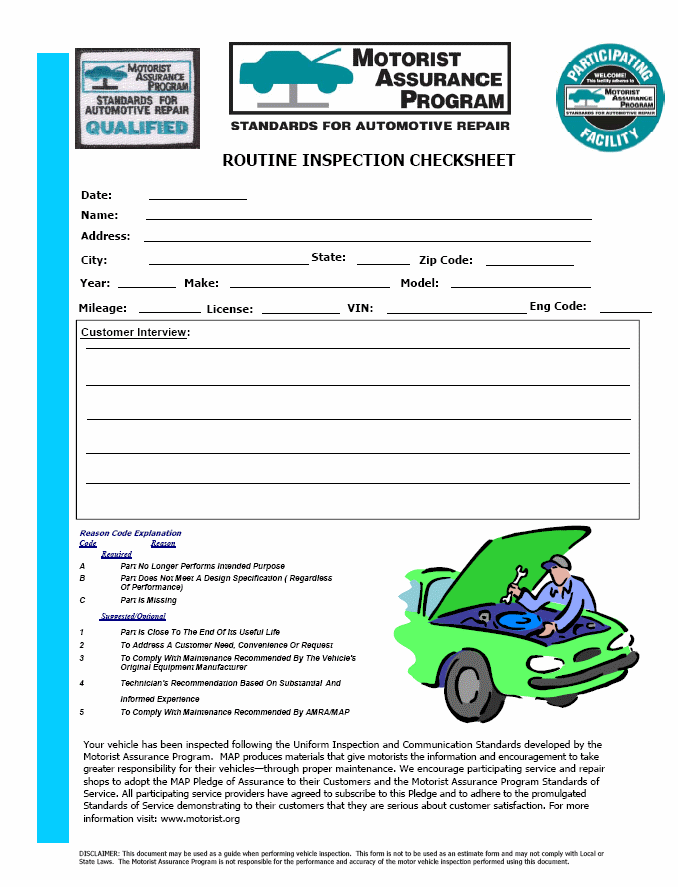
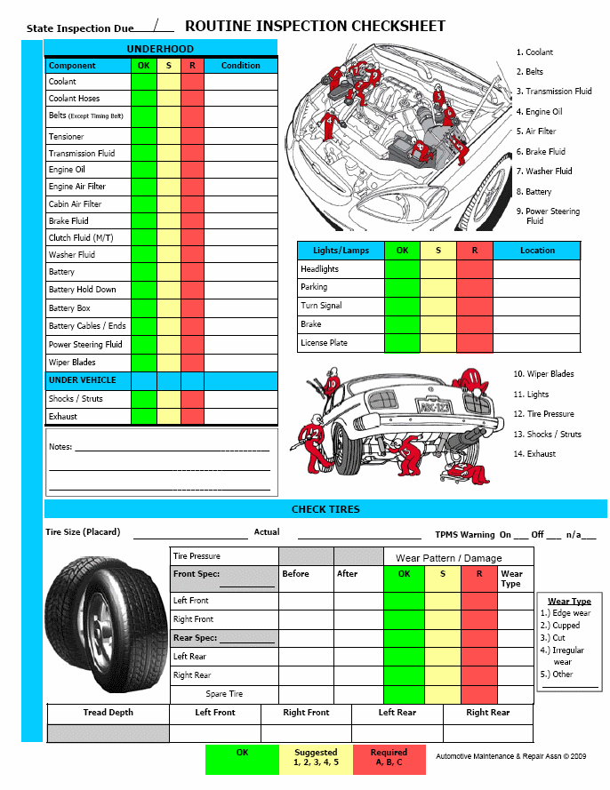

LEMON Manuals
: Even more car manuals for everyone: 1960-2025
Home
>>
Hyundai
>>
2022
>>
Elantra N Line, Standard Trans
>>
Repair and Diagnosis
>>
General Information
>>
Brakes
>>
Map - Routine Inspection Reference Guide
>>
Routine Inspection Reference Guide
>>
Routine Inspection CHECKSHEET
Routine Inspection CHECKSHEET
Fig 1: Routine Inspection Checksheet (1 Of 2)

Fig 2: Routine Inspection Checksheet (2 Of 2)
